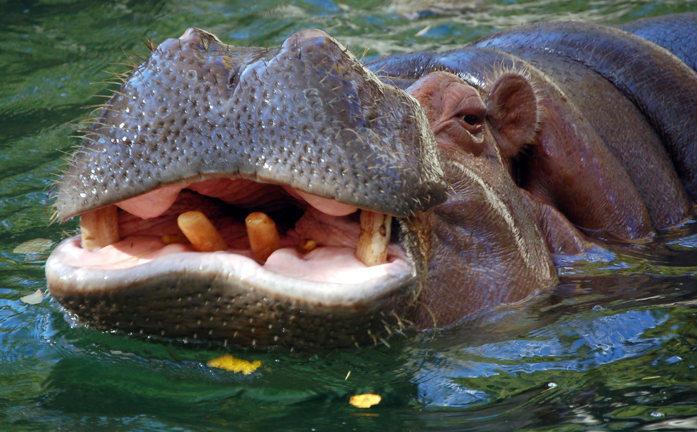

Who Wins? - Lion vs Hippo
Introduction


Hippos are vicious animals from Africa that that live on land but
spend most of their time in the water. The area they live in consists
of many other animals including the too vicious lions. What happens
when they battle head to head?
Their Size and Bite
Typically size and strength will determine who wins in the wild.
Hippos are 10 times heavier than a lion, and hippos have a bite that
is twice as strong. They have 36 sharp and powerful teeth while lions
only have their 2, 4-inch long fangs.


Agility and Finesse


Lions can catch hippos moving at speeds up to 50mph where as hippos
can only trot at speeds up to 30mph. Lion's have better senses and can
see at night, where as hippos merely have an advantage seeing under
murky waters. Hippos have a thick skin which helps defend them, and
lions use their speed, size and power in numbers to scare away other
animals. Hippos will win in the power department, but lions have more
finesse.
Conclusion
Hippos have had to fight lions in the wild before. Lions are
carnivores, and they're good at fighting in packs using ambush
tactics. In a group, lions would win. Hippos typically attack from and
live in the waters a place that would give them a clear advantage
versus a lion. Though they are almost purely herbivores, a single
hippo will win in a fight against a single lion.


Reading Recommendations & Resources
Read more about
hippos' and lions' strengths and weaknesses
here at the "A-Z Animals" website.
Click here for more info
Check this out!